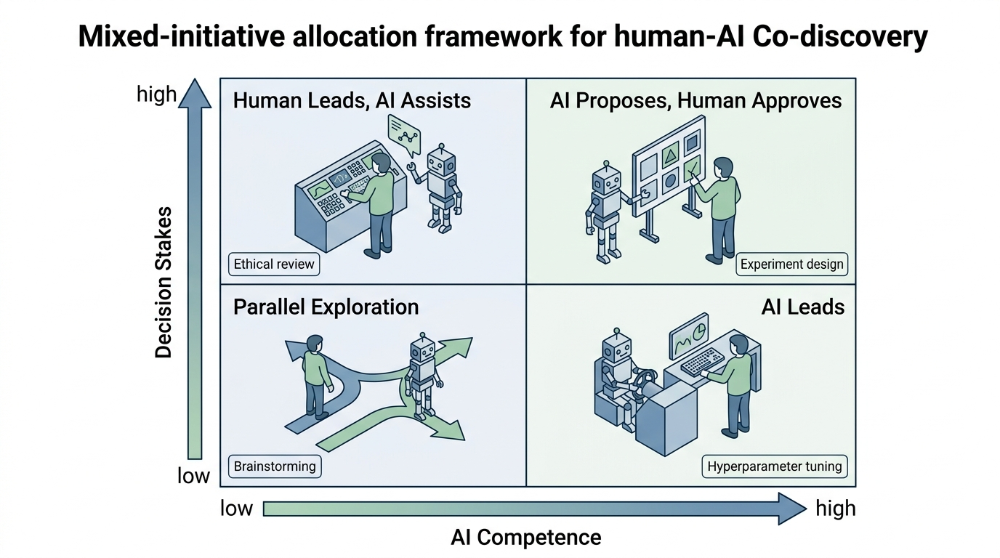

Prerequisites
This section builds on the autonomous innovation concepts from Section 58.1, where we established the spectrum of discovery autonomy and the innovation scoring framework. The research agent architectures from Chapter 53 provide the agent-side foundations. The multi-agent coordination protocols from Chapter 54 apply directly to human-AI team structures. Familiarity with the responsible AI considerations from Chapter 57 is important for the trust calibration discussion.
The debate between "AI as tool" and "AI as autonomous scientist" presents a false dichotomy. The most productive mode of discovery is neither fully manual nor fully autonomous, but a structured collaboration where human scientists and AI agents contribute distinct cognitive capabilities. Humans excel at problem framing, analogical reasoning, aesthetic judgment, and ethical evaluation. AI systems excel at exhaustive search, quantitative optimization, pattern detection across massive datasets, and tireless iteration. Co-discovery is the practice of designing research workflows that leverage both sets of strengths while compensating for each side's weaknesses. This section provides both the conceptual framework and the practical infrastructure for building co-discovery systems.
1. Cognitive Complementarity
A protein engineer notices a subtle pocket geometry that the docking simulation overlooked; in the same hour, the AI screens ten million candidate molecules and surfaces three the engineer would never have considered. This increasingly common scene in a modern drug-discovery lab illustrates the foundational principle of co-discovery: human and artificial intelligence have complementary failure modes, and understanding those complementarities is the basis for designing effective collaboration protocols.
Two intelligent systems whose strengths and weaknesses are anti-correlated (that is, where one system's reliable capabilities correspond to the other's known gaps) will, when paired, typically outperform either system alone. This principle matters because raw capability does not bottleneck scientific discovery; coverage of the full reasoning landscape does. The mechanism is straightforward: each partner catches the other's blind spots, so errors that would propagate unchecked in a solo workflow get corrected at their point of origin. Apply cognitive complementarity as the design basis whenever the research task spans multiple reasoning modes (creative generation, quantitative analysis, contextual judgment). Default to a single-agent approach only when the task falls entirely within one partner's zone of reliable competence.
Table 58.2 maps the cognitive strengths and weaknesses of each partner across the stages of the scientific method. The pattern is striking: at every stage, the natural weakness of one partner aligns with the natural strength of the other. In short: The best discoveries will come not from humans or AI alone, but from partnerships designed so that every blind spot on one side faces a sharp eye on the other.
| Discovery Stage | Human Strength | Human Weakness | AI Strength | AI Weakness |
|---|---|---|---|---|
| Problem identification | Recognizing significance, social relevance | Narrow awareness of adjacent fields | Cross-domain pattern matching at scale | Cannot assess significance without proxy metrics |
| Hypothesis generation | Analogical reasoning, creative leaps | Cognitive biases (confirmation, anchoring) | Exhaustive combinatorial exploration | Difficulty with truly novel concepts outside training |
| Experiment design | Practical constraints, feasibility judgment | Suboptimal designs, limited exploration | Optimal designs (Bayesian, adaptive) | Limited understanding of lab realities |
| Data analysis | Recognizing anomalies with narrative significance | Overwhelmed by dimensionality, p-hacking (where the analyst runs many statistical tests and selectively reports significant ones) risk | High-dimensional pattern detection | Spurious correlation, hallucinated patterns |
| Interpretation | Contextual reasoning, mechanistic insight | Confirmation bias, overconfidence | Systematic uncertainty quantification | Cannot ground findings in physical intuition |
| Communication | Narrative, persuasion, context for audience | Selective reporting, framing effects | Comprehensive, reproducible reporting | No sense of audience or rhetorical strategy |
Cognitive complementarity does not imply that the human is "in charge" and the AI is a "tool," nor that the AI should eventually replace the human. It means that the system of human + AI has capabilities that neither component has alone. A chess analogy is instructive: in "Advanced Chess" (Kasparov's term), a human-computer team consistently outperforms both the best humans and the best computers playing alone, not because the human overrides the computer or vice versa, but because each catches the other's blind spots. The same dynamic applies to scientific discovery, with the additional complexity that discovery is open-ended rather than constrained by fixed rules.
2. Mixed-Initiative Research Workflows
A mixed-initiative workflow (where both human and AI can propose actions, and research direction emerges from their interaction rather than from either party's unilateral decisions) requires solving one key design challenge: initiative allocation, which determines who should propose the next step at each point in the research process.
Without a principled way to decide who leads each step, co-discovery teams fall into one of two traps: the human micromanages every decision, negating the AI's speed advantage, or the AI runs unchecked through high-stakes choices the human should have vetted. Getting initiative allocation wrong does not merely slow research down; it produces the same blind-spot failures that solo work does, erasing the whole point of collaboration.
We formalize initiative allocation as a function of two variables: the AI's competence on the current task (estimated from past performance) and the stakes of the decision (how costly a mistake would be). Figure 58.3 visualizes this as a 2x2 framework: Figure 58.2.1 illustrates Mixed-initiative allocation framework.
- High competence, low stakes: AI leads. Examples: hyperparameter tuning, routine data preprocessing, literature search expansion. The AI acts and reports results.
- High competence, high stakes: AI proposes, human approves. Examples: experimental design for expensive runs, selection of publication-worthy results. The AI generates a ranked set of options with justifications; the human makes the final call.
- Low competence, low stakes: Parallel exploration. Both human and AI independently explore, then compare notes. Useful for early-stage brainstorming where diversity of approach matters more than efficiency.
- Low competence, high stakes: Human leads, AI assists. Examples: defining research questions, evaluating ethical implications, making career decisions based on results. The human drives; the AI provides data, analysis, and alternative perspectives on request.
Mental Model
Think of initiative allocation like a kitchen where a home cook and a professional pastry chef are preparing a multi-course meal together. For dessert (high competence, low stakes for the pastry chef), the chef leads and the cook tastes. For the main course seasoning (high competence, high stakes), the chef proposes a flavor profile but the cook, who knows the guests' preferences, gives final approval. For appetizer brainstorming (low competence for both, low stakes), they each sketch ideas independently and then compare. For the menu's dietary accommodations (low competence for the chef, high stakes), the cook leads because she knows which guest has the allergy. The point is not who has more skill overall, but who has the right skill for each specific subtask, and how much damage a mistake would cause.
The following implementation provides an initiative allocator that dynamically assigns roles based on competence estimation and stakes assessment.
"""
Mixed-initiative research workflow manager.
Dynamically allocates initiative between human and AI based
on estimated competence and decision stakes, implementing the
2x2 framework for co-discovery collaboration.
"""
from dataclasses import dataclass, field
from enum import Enum
from datetime import datetime
from typing import Optional
class InitiativeMode(Enum):
AI_LEADS = "ai_leads" # High competence, low stakes
AI_PROPOSES = "ai_proposes" # High competence, high stakes
PARALLEL = "parallel" # Low competence, low stakes
HUMAN_LEADS = "human_leads" # Low competence, high stakes
class TaskType(Enum):
PROBLEM_FRAMING = "problem_framing"
HYPOTHESIS_GENERATION = "hypothesis_generation"
LITERATURE_SEARCH = "literature_search"
EXPERIMENT_DESIGN = "experiment_design"
DATA_COLLECTION = "data_collection"
ANALYSIS = "analysis"
INTERPRETATION = "interpretation"
WRITING = "writing"
ETHICAL_REVIEW = "ethical_review"
@dataclass
class CompetenceEstimate:
"""Tracks AI competence on a task type over time."""
task_type: TaskType
successes: int = 0
attempts: int = 0
human_overrides: int = 0 # Times human rejected AI proposal
@property
def competence(self) -> float:
"""
Bayesian estimate of competence with a Beta(1,1) prior.
Starts at 0.5 (maximum uncertainty), converges toward
empirical success rate with experience.
"""
alpha = 1 + self.successes
beta = 1 + (self.attempts - self.successes)
return alpha / (alpha + beta)
@property
def confidence(self) -> float:
"""How confident we are in the competence estimate."""
if self.attempts == 0:
return 0.0
return min(1.0, self.attempts / 20.0) # Saturates at 20
@dataclass
class StakesAssessment:
"""Assesses the stakes of a decision in the research process."""
reversibility: float = 0.5 # 0 = fully reversible, 1 = irreversible
resource_cost: float = 0.0 # Normalized cost of acting
reputation_risk: float = 0.0 # Risk to scientific reputation
ethical_weight: float = 0.0 # Ethical sensitivity
@property
def stakes(self) -> float:
"""Composite stakes score in [0, 1]."""
return min(1.0, (
0.3 * self.reversibility
+ 0.3 * self.resource_cost
+ 0.2 * self.reputation_risk
+ 0.2 * self.ethical_weight
))
@dataclass
class CoDiscoveryAction:
"""A single action in the co-discovery workflow."""
task_type: TaskType
description: str
initiative: InitiativeMode
proposed_by: str # "human" or "ai"
approved_by: Optional[str] = None
outcome: Optional[str] = None
timestamp: datetime = field(default_factory=datetime.now)
class InitiativeAllocator:
"""
Dynamically allocates initiative between human and AI
based on competence history and stakes assessment.
The allocator learns from interaction: when a human overrides
an AI proposal, competence for that task type decreases.
When an AI-led action succeeds, competence increases.
"""
# Default stakes for each task type (can be overridden)
DEFAULT_STAKES = {
TaskType.PROBLEM_FRAMING: StakesAssessment(
reversibility=0.8, resource_cost=0.1,
reputation_risk=0.3, ethical_weight=0.5
),
TaskType.HYPOTHESIS_GENERATION: StakesAssessment(
reversibility=0.9, resource_cost=0.0,
reputation_risk=0.1, ethical_weight=0.1
),
TaskType.LITERATURE_SEARCH: StakesAssessment(
reversibility=1.0, resource_cost=0.0,
reputation_risk=0.0, ethical_weight=0.0
),
TaskType.EXPERIMENT_DESIGN: StakesAssessment(
reversibility=0.3, resource_cost=0.6,
reputation_risk=0.2, ethical_weight=0.3
),
TaskType.DATA_COLLECTION: StakesAssessment(
reversibility=0.2, resource_cost=0.7,
reputation_risk=0.1, ethical_weight=0.2
),
TaskType.ANALYSIS: StakesAssessment(
reversibility=0.9, resource_cost=0.1,
reputation_risk=0.1, ethical_weight=0.1
),
TaskType.INTERPRETATION: StakesAssessment(
reversibility=0.7, resource_cost=0.0,
reputation_risk=0.5, ethical_weight=0.3
),
TaskType.WRITING: StakesAssessment(
reversibility=0.8, resource_cost=0.1,
reputation_risk=0.6, ethical_weight=0.2
),
TaskType.ETHICAL_REVIEW: StakesAssessment(
reversibility=0.1, resource_cost=0.0,
reputation_risk=0.9, ethical_weight=1.0
),
}
COMPETENCE_THRESHOLD = 0.6
STAKES_THRESHOLD = 0.4
def __init__(self):
self.competence_tracker: dict[TaskType, CompetenceEstimate] = {
tt: CompetenceEstimate(task_type=tt)
for tt in TaskType
}
self.action_history: list[CoDiscoveryAction] = []
def allocate(
self,
task_type: TaskType,
stakes_override: Optional[StakesAssessment] = None,
) -> InitiativeMode:
"""
Determine who should lead this task based on current
competence estimates and stakes assessment.
"""
competence = self.competence_tracker[task_type].competence
stakes_assessment = stakes_override or self.DEFAULT_STAKES.get(
task_type,
StakesAssessment()
)
stakes = stakes_assessment.stakes
high_competence = competence >= self.COMPETENCE_THRESHOLD
high_stakes = stakes >= self.STAKES_THRESHOLD
if high_competence and not high_stakes:
return InitiativeMode.AI_LEADS
elif high_competence and high_stakes:
return InitiativeMode.AI_PROPOSES
elif not high_competence and not high_stakes:
return InitiativeMode.PARALLEL
else:
return InitiativeMode.HUMAN_LEADS
def record_outcome(
self,
task_type: TaskType,
success: bool,
human_override: bool = False,
) -> None:
"""Update competence estimates based on task outcome."""
tracker = self.competence_tracker[task_type]
tracker.attempts += 1
if success:
tracker.successes += 1
if human_override:
tracker.human_overrides += 1
def get_competence_report(self) -> dict[str, dict[str, float]]:
"""Summarize current competence estimates across task types."""
return {
tt.value: {
"competence": est.competence,
"confidence": est.confidence,
"attempts": est.attempts,
"override_rate": (
est.human_overrides / max(est.attempts, 1)
),
}
for tt, est in self.competence_tracker.items()
}
Knowing who should lead each task is necessary but not sufficient; the human partner also needs a reliable way to judge how much to rely on the AI's contributions, which brings us to the problem of trust calibration.
3. Trust Calibration
Effective co-discovery requires calibrated trust: the human must trust the AI system exactly as much as it deserves. Overtrust leads to automation complacency (where the human accepts AI outputs without critical examination because past outputs were correct). Undertrust leads to automation aversion (where the human ignores valuable AI contributions, often triggered by a single memorable AI failure). Both failure modes degrade discovery quality.
Common Misconception
A common misconception is that trust calibration means increasing trust over time as the AI "proves itself." In reality, calibrated trust can go in either direction: it should increase when the AI demonstrates reliable competence and decrease when the AI encounters task domains outside its training distribution, even if it performed well on previous, unrelated tasks. Trust that only ratchets upward is not calibration; it is automation complacency with a delay.
Scientific contexts make trust calibration especially challenging because researchers rarely know the ground truth (that is the whole point of doing research). Unlike a self-driving car, where accident rates provide a clear metric, no one can immediately verify a discovery system's outputs against a known correct answer. Teams must instead rely on process-based trust signals (indicators derived from how the AI reached its conclusion, rather than from comparing the conclusion against a known correct answer): indicators that the AI's reasoning process is sound, even when the conclusion resists independent verification.
Four process-based trust signals anchor a co-discovery system:
- Epistemic transparency. The system distinguishes between what it knows from data, what it infers from models, and what it assumes. Each claim carries a provenance tag indicating its evidential basis. This connects to the provenance tracking infrastructure from Chapter 47.
- Uncertainty quantification. Every prediction, hypothesis, or recommendation comes with calibrated confidence intervals (ranges whose stated coverage probability matches their actual empirical coverage). The Bayesian methods from Chapter 32 provide the technical substrate. A system that says "I am 90% confident" should be correct 90% of the time it says that.
- Disagreement flagging. When the AI's analysis contradicts the human's expectations, or when multiple AI components disagree with each other, the system explicitly flags the disagreement rather than silently averaging or arbitrarily choosing. Disagreements are often the most scientifically interesting moments in a collaboration.
- Competence boundaries. The system knows (and communicates) the limits of its competence. It can say: "This question requires expertise in synthetic organic chemistry, which is outside my training domain. I can assist with the computational modeling aspects, but the synthesis feasibility assessment should come from a domain expert."
A pharmaceutical company uses a co-discovery system for lead compound optimization. The AI proposes modifications to a drug candidate's molecular structure to improve binding affinity. A well-calibrated system presents the proposal as: "Modifying position R3 from methyl to ethyl is predicted to improve binding by 1.4 kcal/mol (95% confidence interval (CI): 0.8 to 2.1) based on the molecular dynamics ensemble from 50 ns simulation. However, the synthetic accessibility score drops from 0.85 to 0.62, and my confidence in the absorption, distribution, metabolism, excretion, and toxicity (ADMET) prediction for the modified compound is low (the nearest training example is 0.4 Tanimoto distance away, where Tanimoto distance measures the structural dissimilarity between two molecules as 1 minus the ratio of their shared chemical features to their combined features). I recommend consulting a medicinal chemist about the synthetic route before committing to this modification." This response demonstrates all four trust signals: it separates data from inference, provides confidence intervals, flags the potential disagreement between binding improvement and synthetic difficulty, and acknowledges its competence boundary on synthesis planning.
4. The Co-Discovery Session Manager
With the conceptual framework in place, we can build the practical infrastructure for co-discovery: a session manager that structures the interaction between human scientist and AI agent around the hypothesis-experiment-interpretation loop. The session manager implements the initiative allocation logic from Section 2, surfaces the trust signals from Section 3, and maintains a persistent record of the collaboration for reproducibility.
"""
Co-Discovery Session Manager for the Discovery Workbench.
Structures human-AI scientific collaboration around the
hypothesis-experiment-interpretation loop with dynamic
initiative allocation and trust signal surfacing.
"""
import json
import uuid
from dataclasses import dataclass, field, asdict
from datetime import datetime
from pathlib import Path
from typing import Any, Optional
from enum import Enum
class SessionPhase(Enum):
"""Phases of the hypothesis-experiment-interpretation loop."""
FRAMING = "framing"
HYPOTHESIS = "hypothesis"
DESIGN = "design"
EXECUTION = "execution"
ANALYSIS = "analysis"
INTERPRETATION = "interpretation"
SYNTHESIS = "synthesis"
@dataclass
class TrustSignal:
"""A trust signal surfaced during co-discovery."""
signal_type: str # "transparency", "uncertainty", "disagreement", "boundary"
message: str
severity: str = "info" # "info", "warning", "critical"
evidence: Optional[dict] = None
@dataclass
class CoDiscoveryEvent:
"""An event in the co-discovery session log."""
event_id: str = field(default_factory=lambda: str(uuid.uuid4())[:8])
timestamp: str = field(
default_factory=lambda: datetime.now().isoformat()
)
phase: str = ""
actor: str = "" # "human", "ai", "system"
action: str = ""
content: dict = field(default_factory=dict)
trust_signals: list[dict] = field(default_factory=list)
initiative_mode: str = ""
class CoDiscoverySession:
"""
Manages a single co-discovery session, tracking the
progression through research phases, recording all
decisions and their rationale, and surfacing trust
signals at appropriate moments.
Usage:
session = CoDiscoverySession(
research_question="Does compound X inhibit enzyme Y?",
domain="biochemistry",
)
session.start_phase(SessionPhase.FRAMING)
session.record_human_input(
"I suspect the binding pocket has an allosteric site"
)
initiative = session.get_initiative()
# ... AI generates hypotheses ...
session.record_ai_output(
hypotheses, trust_signals=[...]
)
session.save("sessions/session_001.json")
"""
def __init__(
self,
research_question: str,
domain: str,
allocator: Optional["InitiativeAllocator"] = None,
session_id: Optional[str] = None,
):
self.session_id = session_id or str(uuid.uuid4())[:12]
self.research_question = research_question
self.domain = domain
self.allocator = allocator or InitiativeAllocator()
self.current_phase = SessionPhase.FRAMING
self.events: list[CoDiscoveryEvent] = []
self.hypotheses: list[dict] = []
self.experiments: list[dict] = []
self.findings: list[dict] = []
# Session-level metadata
self.created_at = datetime.now().isoformat()
self.status = "active"
# Record session creation
self._log_event(
actor="system",
action="session_created",
content={
"research_question": research_question,
"domain": domain,
},
)
def start_phase(self, phase: SessionPhase) -> InitiativeMode:
"""
Transition to a new research phase. Returns the
recommended initiative mode for this phase.
"""
self.current_phase = phase
# Map session phases to task types for initiative allocation
phase_to_task = {
SessionPhase.FRAMING: TaskType.PROBLEM_FRAMING,
SessionPhase.HYPOTHESIS: TaskType.HYPOTHESIS_GENERATION,
SessionPhase.DESIGN: TaskType.EXPERIMENT_DESIGN,
SessionPhase.EXECUTION: TaskType.DATA_COLLECTION,
SessionPhase.ANALYSIS: TaskType.ANALYSIS,
SessionPhase.INTERPRETATION: TaskType.INTERPRETATION,
SessionPhase.SYNTHESIS: TaskType.WRITING,
}
task_type = phase_to_task.get(
phase, TaskType.PROBLEM_FRAMING
)
initiative = self.allocator.allocate(task_type)
self._log_event(
actor="system",
action="phase_transition",
content={
"new_phase": phase.value,
"initiative_mode": initiative.value,
},
)
return initiative
def record_human_input(
self,
content: str,
metadata: Optional[dict] = None,
) -> None:
"""Record a human scientist's input to the session."""
self._log_event(
actor="human",
action="input",
content={"text": content, **(metadata or {})},
)
def record_ai_output(
self,
content: Any,
trust_signals: Optional[list[TrustSignal]] = None,
rationale: str = "",
) -> None:
"""
Record an AI output along with trust signals.
Trust signals are surfaced to the human partner
for calibrated trust assessment.
"""
signals = trust_signals or []
self._log_event(
actor="ai",
action="output",
content={
"result": content if isinstance(content, dict) else str(content),
"rationale": rationale,
},
trust_signals=[
{
"type": s.signal_type,
"message": s.message,
"severity": s.severity,
}
for s in signals
],
)
def record_decision(
self,
decision: str,
decided_by: str,
alternatives_considered: Optional[list[str]] = None,
rationale: str = "",
) -> None:
"""
Record a research decision with full provenance.
Every decision in the co-discovery process is logged
with who made it, what alternatives were considered,
and why this option was chosen.
"""
self._log_event(
actor=decided_by,
action="decision",
content={
"decision": decision,
"alternatives": alternatives_considered or [],
"rationale": rationale,
},
)
def flag_disagreement(
self,
human_position: str,
ai_position: str,
resolution: Optional[str] = None,
) -> TrustSignal:
"""
Explicitly flag a disagreement between human and AI.
Disagreements are among the most valuable events in
co-discovery: they mark points where one partner's
assumptions may need revision.
"""
signal = TrustSignal(
signal_type="disagreement",
message=f"Human: {human_position} | AI: {ai_position}",
severity="warning",
evidence={"resolution": resolution},
)
self._log_event(
actor="system",
action="disagreement_flagged",
content={
"human_position": human_position,
"ai_position": ai_position,
"resolution": resolution,
},
trust_signals=[{
"type": signal.signal_type,
"message": signal.message,
"severity": signal.severity,
}],
)
return signal
def get_session_summary(self) -> dict:
"""
Generate a summary of the session for reporting
and reproducibility.
"""
phase_counts = {}
for event in self.events:
phase = event.phase
phase_counts[phase] = phase_counts.get(phase, 0) + 1
disagreements = [
e for e in self.events
if e.action == "disagreement_flagged"
]
return {
"session_id": self.session_id,
"research_question": self.research_question,
"domain": self.domain,
"created_at": self.created_at,
"current_phase": self.current_phase.value,
"total_events": len(self.events),
"events_per_phase": phase_counts,
"n_disagreements": len(disagreements),
"n_hypotheses": len(self.hypotheses),
"n_experiments": len(self.experiments),
"n_findings": len(self.findings),
"competence_report": self.allocator.get_competence_report(),
}
def save(self, path: str) -> None:
"""Persist session to JSON for reproducibility."""
session_data = {
"session_id": self.session_id,
"research_question": self.research_question,
"domain": self.domain,
"created_at": self.created_at,
"current_phase": self.current_phase.value,
"events": [asdict(e) for e in self.events],
"hypotheses": self.hypotheses,
"experiments": self.experiments,
"findings": self.findings,
}
Path(path).parent.mkdir(parents=True, exist_ok=True)
with open(path, "w") as f:
json.dump(session_data, f, indent=2, default=str)
@classmethod
def load(cls, path: str) -> "CoDiscoverySession":
"""Restore a session from JSON."""
with open(path) as f:
data = json.load(f)
session = cls(
research_question=data["research_question"],
domain=data["domain"],
session_id=data["session_id"],
)
session.created_at = data["created_at"]
session.current_phase = SessionPhase(data["current_phase"])
session.hypotheses = data.get("hypotheses", [])
session.experiments = data.get("experiments", [])
session.findings = data.get("findings", [])
# Reconstruct events
for e_data in data.get("events", []):
session.events.append(CoDiscoveryEvent(**e_data))
return session
def _log_event(
self,
actor: str,
action: str,
content: dict,
trust_signals: Optional[list[dict]] = None,
) -> None:
"""Internal: append an event to the session log."""
event = CoDiscoveryEvent(
phase=self.current_phase.value,
actor=actor,
action=action,
content=content,
trust_signals=trust_signals or [],
initiative_mode=self.allocator.allocate(
TaskType.PROBLEM_FRAMING # Default
).value,
)
self.events.append(event)
Building a co-discovery interface from scratch requires significant frontend effort.
Gradio provides chat-style interfaces
with file upload, visualization, and component composition in approximately 30 lines of
Python. Chainlit offers a more structured
conversation interface with step tracking, session persistence, and multi-user support.
For the trust signal display and initiative mode indicators, both frameworks support
custom components. The session manager in Listing 58.5 provides the backend logic; Gradio
or Chainlit provides the frontend. Wrapping the CoDiscoverySession in a
Chainlit app takes roughly 100 lines and yields a deployable co-discovery interface.
As of 2025, Gradio 5 has added native multi-turn agent support and built-in streaming, making it even more suitable for co-discovery interfaces; Chainlit remains actively maintained with comparable features.
5. Patterns for Effective Co-Discovery
Effective co-discovery also depends on interaction patterns that have emerged from early human-AI research deployments. Five patterns stand out.
Pattern 1: Diverge-Then-Converge
In the hypothesis generation phase, have both human and AI independently generate hypotheses before sharing them. This prevents anchoring bias (the tendency to fixate on the first piece of information encountered, which then skews all subsequent judgments) and automation bias (the tendency to defer to automated system outputs even when they conflict with one's own correct reasoning). After independent generation, compare the two sets. Hypotheses that appear in both sets have high convergent validity (where independent methods arriving at the same conclusion strengthen confidence that the conclusion is correct). Hypotheses that appear in only one set are the most interesting: they represent the cognitive blind spots that co-discovery is designed to illuminate.
Pattern 2: Adversarial Interpretation
After the AI produces an analysis, the human's first task is not to accept or reject it but to construct the strongest possible counter-interpretation. What alternative explanation could account for the same data? What confounders might the AI have missed? Conversely, when the human proposes an interpretation, the AI should systematically generate adversarial critiques. This mirrors the peer review process but happens in real time within the research team.
Pattern 3: Structured Handoffs
When initiative passes from one partner to the other, the handoff should include three elements: (1) a summary of what was done and why, (2) the key uncertainties that remain, and (3) the specific question that the next partner should address. Unstructured handoffs ("here are the results, what do you think?") waste the receiving partner's cognitive resources on context reconstruction.
Checkpoint
So far: effective co-discovery rests on three interaction patterns: generating ideas independently before comparing them (diverge-then-converge), stress-testing each other's interpretations (adversarial interpretation), and passing initiative with explicit context (structured handoffs).
Pattern 4: Periodic Recalibration
At a regular interval (in practice, every 5 to 10 research cycles, though the right cadence depends on how quickly the domain shifts), the team should pause for a calibration check. The human reviews the AI's predictions from previous cycles against outcomes: was the AI's confidence well-calibrated? Were its uncertainty estimates accurate? Did it flag the right disagreements? This empirical calibration prevents trust drift (gradual over- or under-trust that accumulates without explicit correction).
Pattern 5: Provenance-First Documentation
Every finding should carry a provenance chain: which data fed the analysis, which methods were applied, who (human or AI) proposed the interpretation, and what alternatives were considered. Beyond reproducibility, provenance is essential for understanding why a collaboration produced its results, for debugging partnerships that stall, and for replicating conditions that led to a breakthrough.
A climate research team uses the co-discovery framework to investigate a newly observed atmospheric pattern. The session proceeds through phases: Framing (human leads; defines the pattern as a potential new mode of variability in the Southern Hemisphere). Hypothesis (parallel; both independently generate explanations; the human proposes a connection to sea surface temperature anomalies; the AI proposes a connection to stratospheric aerosol loading; neither had considered the other's hypothesis). Design (AI proposes; suggests a paired sensitivity experiment using the climate simulation framework from Chapter 43; human approves but adds a control run). Analysis (AI leads; runs the simulations, detects a statistically significant interaction between both proposed mechanisms). Interpretation (human leads; the interaction effect was not anticipated by either partner independently, representing a genuinely novel finding that emerged from the complementarity of the collaboration).
Research Frontier
The COSCIENTIST system (Boiko et al., "Autonomous chemical research with large language models," Nature, 2023) demonstrated an LLM-driven agent that autonomously plans, executes, and analyzes chemical experiments by coordinating web search, documentation lookup, code execution, and robotic lab hardware. While COSCIENTIST operated largely autonomously, its architecture reveals exactly where human-AI co-discovery adds value: the system excelled at routine synthesis optimization but required human intervention for novel reaction classes outside its training data. More recent work on "mixed-autonomy" laboratory platforms (2024) extends this model by letting the human scientist dynamically adjust the agent's autonomy level mid-experiment, effectively implementing the initiative allocation framework described in this section at the wet-lab bench.
These five patterns assume that the human and AI are working as genuine colleagues, but not every research context calls for that depth of integration; some tasks need only a lightweight tool relationship, while others benefit from full delegation.
6. The Spectrum of Human-AI Research Partnerships
Not every research collaboration needs the full co-discovery framework. The appropriate level of integration depends on the research context. We map five partnership modes along a spectrum from loose coupling to deep integration:
- Tool mode. The AI is a sophisticated instrument. The human formulates questions, the AI computes answers, the human interprets results. Most current LLM-assisted research operates here. Appropriate for well-understood domains with clear metrics.
- Assistant mode. The AI proactively suggests analyses, flags anomalies, and drafts interpretations, but the human retains all decision authority. The research agents from Chapter 40 operate at this level.
- Colleague mode. Both partners contribute ideas, critique each other's proposals, and jointly decide on research directions. This is the mode that the co-discovery session manager supports. Appropriate for exploratory research where neither partner has a clear advantage.
- Delegation mode. The human sets high-level goals and constraints; the AI executes entire research sub-programs autonomously, reporting back for review at milestones. The AI scientist architectures from Chapter 53 operate here.
- Orchestration mode. The human manages a portfolio of AI-driven research programs, allocating resources, resolving conflicts between programs, and synthesizing cross-program insights. This is the organizational level discussed in Section 58.1.
A mature research group will operate across multiple modes simultaneously: using tool mode for routine analyses, colleague mode for frontier questions, and delegation mode for well-defined sub-problems. The co-discovery session manager adapts its initiative allocation based on which mode the current interaction requires.
The CoDiscoverySession becomes a first-class object in the Discovery Workbench,
alongside the experiment registry (Chapter 47) and the knowledge graph (Chapter 38). Each
session links to the hypotheses it generated, the experiments it designed, and the findings
it produced, creating a complete provenance chain from research question to conclusion. The
Workbench UI displays the current initiative mode, surfaces trust signals in real time, and
provides a timeline view of the session history. Sessions can be exported as structured
JSON for reproducibility audits or as narrative reports for publication supplements.
Try It: Build a Diverge-Then-Converge Hypothesis Generator
Implement a minimal co-discovery loop using only Python and an LLM API to experience the diverge-then-converge pattern firsthand.
Step 1: Choose a simple scientific question you find interesting (e.g., "Why do some houseplants thrive under fluorescent light while others do not?"). Write down three hypotheses of your own before touching any code.
Step 2: Write a Python script that sends the same question to an LLM (using openai or anthropic client libraries) with the prompt: "Generate exactly three distinct, testable hypotheses for the following question. For each, state the proposed mechanism in one sentence." Collect the AI's three hypotheses.
Step 3: Write a comparison function that takes your list and the AI's list, computes pairwise cosine similarity between each hypothesis pair using scikit-learn's TfidfVectorizer and cosine_similarity, and flags pairs above 0.5 similarity as "convergent" and all others as "unique to human" or "unique to AI."
Step 4: Print a summary table showing convergent hypotheses (high mutual validity) and unique hypotheses (potential blind-spot discoveries). Note which unique hypotheses surprise you.
Step 5: Repeat the experiment with a different question and compare whether the same partner (you or the AI) consistently produces the unique hypotheses, or whether the blind-spot coverage shifts by domain.
Exercise 58.2.1
A co-discovery system has accumulated the following competence history for experiment design:
12 attempts, 9 successes, 3 human overrides. The stakes assessment for the next experiment
design task yields reversibility = 0.3, resource_cost = 0.7, reputation_risk = 0.2,
ethical_weight = 0.3. Using the InitiativeAllocator from Listing 58.4 (with
COMPETENCE_THRESHOLD = 0.6 and STAKES_THRESHOLD = 0.4), determine: (a) the Bayesian competence estimate (using a Beta(1,1) prior, where the uniform Beta prior encodes maximum initial uncertainty and is updated by observed successes and failures), (b) the composite stakes score, and
(c) the resulting initiative mode. Then explain in one sentence why this mode is appropriate
given the specific combination of competence and stakes.
Hint
For part (a), recall the Beta posterior formula: competence = (1 + successes) / (1 + successes + 1 + failures), where failures = attempts minus successes. For part (b), apply the weighted sum: 0.3 * reversibility + 0.3 * resource_cost + 0.2 * reputation_risk + 0.2 * ethical_weight. Compare both values to their respective thresholds to land in one of the four quadrants.
Step-Through: Initiative Allocation Over Three Research Cycles
Trace the InitiativeAllocator through three cycles on the ANALYSIS task type,
starting from zero history. Use the default stakes for ANALYSIS (reversibility=0.9,
resource_cost=0.1, reputation_risk=0.1, ethical_weight=0.1).
Cycle 0 (no history): competence = (1+0)/(1+0+1+0) = 0.5. Stakes = 0.3(0.9) + 0.3(0.1) + 0.2(0.1) + 0.2(0.1) = 0.27 + 0.03 + 0.02 + 0.02 = 0.34. Competence 0.5 < 0.6 (low), stakes 0.34 < 0.4 (low). Mode: PARALLEL.
Cycle 1 (1 success recorded): competence = (1+1)/(1+1+1+0) = 2/3 = 0.667. Stakes unchanged at 0.34. Competence 0.667 ≥ 0.6 (high), stakes 0.34 < 0.4 (low). Mode: AI_LEADS.
Cycle 2 (1 more attempt, but a failure): competence = (1+1)/(1+1+1+1) = 2/4 = 0.5. Stakes unchanged. Competence 0.5 < 0.6 (low), stakes 0.34 < 0.4 (low). Mode: PARALLEL. One failure drops the system back to shared exploration, demonstrating the allocator's responsiveness to performance.
Real-World Application: Materials Science
The A-Lab at Lawrence Berkeley National Laboratory uses a mixed-initiative system where an AI agent proposes novel inorganic material compositions and synthesis recipes, while human scientists review proposals for physical plausibility and override the robotic synthesis queue when the agent's suggested precursors are unavailable or hazardous. In its first 17 days of operation (2023), the system autonomously synthesized 41 of 58 target compounds, with human interventions concentrated at the interpretation and safety review stages, precisely matching the initiative allocation pattern this section prescribes.
The Centaur Paradox
In 2005, a "freestyle" chess tournament on Playchess.com produced a surprising winner: not a grandmaster with a supercomputer, but two amateur players using three ordinary laptops. Their edge was not chess strength or hardware power but a superior process for deciding when to trust the engine and when to override it. Garry Kasparov, who originated the human-plus-machine concept after his 1997 loss to Deep Blue, called this result evidence that "a weak human plus machine plus a better process" beats "a strong human plus machine plus an inferior process." The lesson for co-discovery: the collaboration protocol matters more than the raw capability of either partner.
Lab: Measuring Cognitive Complementarity with a Toy Discovery Task
Goal: Empirically measure whether a human-AI team outperforms either partner
alone on a small pattern-discovery task. Tools: Python 3.10+, an LLM API
(OpenAI or Anthropic), scikit-learn, and matplotlib.
Setup (5 min): Generate a synthetic dataset with sklearn.datasets.make_classification
using 10 features, 2 informative, 3 redundant, and a hidden interaction term (multiply two
features, add noise, append as feature 11). Solo-human trial (5 min):
Inspect pairwise scatter plots and write down which features you believe are informative.
Solo-AI trial (5 min): Send the feature correlation matrix and summary
statistics to an LLM, ask it to identify the informative features. Co-discovery trial
(10 min): Share the AI's answer with yourself, re-examine any features it flagged
that you missed, and produce a joint answer. What to observe: Score each
trial by precision and recall against the true informative set (features 0, 1, and the
interaction feature 11). Vary the noise level and the number of redundant features across
runs. In most configurations, the joint answer will match or exceed both solo answers,
illustrating cognitive complementarity in miniature.